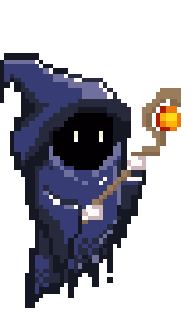

About Crystal Crisis
Crystal Crisis is a fantasy themed Run and Gun. Playing as a wizard, the player runs through a 2D landscape and defeats monsters along the way.
This game is a simple 2D Run n’ Gun much like other games in the genre. However, it allows for shooting in the four cardinal directions (up, down,left, and right) which is completely independent from movement and player position.
Narrative
There was a land of fantasy called Obvioulous where a duo of Heros, the Paladin and the Wizard, ventured to defeat the immortal
Demon Lord that maintained a tyrannical grip over the denizens of the country in hopes to attain glory and riches. After a long and weary adventure, they arrived at the
entrance of the Demon Lord's lair. After venturing inside, they had an intense and fierce battle against the Demon Lord and the duo brought him to his knees. Knowing it was
impossible to kill him, they prepared a magic crystal to seal him away. However, at the last moment, the Paladin trapped the Wizard inside the crystal along with the Demon Lord!
The "noble" knight had wanted the glory all to himself. Trapped inside the crystal with the Demon Lord, the Wizard's hatred towards his former friend grew.
The Wizard made a pact with the Demon Lord, fusing with them and granting them abilities that will allow them to defeat their former friend.
After centuries of being trapped within the crystal, a couple of newbie adventurers stumbled on the ruins of where the Wizard and Demon Lord were sealed.
Unwittingly breaking the seal that held them in the crystal for so long. Centuries having passed however, the Wizard realizes their friend was long gone so instead
he swore vengeance against their entire lineage and legacy. As such, Wizard/Demon Lord fusion set out to defeat the Paladin's descendant residing in luxury at the
Obvious Palace.
Gameplay
The player-controlled wizard runs to the right to advance through the level. Their main goal is to reach the end and defeat the boss, thus completing the game.
Along their journey, the wizard will navigate mines, jungles, and a castle while defending themselves from the hordes of monsters trying to kill them.
The player will be tasked with positioning themselves, avoiding bullets trying to hit them, and aim their shots to defeat enemies.
In specifics, the player can move left or right, jump, and shoot in 8 directions.
The Game World
Overview
The player-controlled wizard runs to the right to advance through the level. Their main goal is to reach the end and defeat the boss, thus completing the game.
Along their journey, the wizard will navigate mines, jungles, and a castle while defending themselves from the hordes of monsters trying to kill them.
The player will be tasked with positioning themselves, avoiding bullets trying to hit them, and aim their shots to defeat enemies.
In specifics, the player can move left or right, jump, and shoot in 8 directions.
The Corrupted Wizard

They serve as the main character of the game that the player controls. Centuries ago, the Wizard along with their partner, the Paladin, ventured on a quest
to vanquish the evil Demon King. However, the Wizard was betrayed by their Paladin friend and was sealed along the Demon King in a crystal. While stuck in the seal,
the Wizard made a pact with the Demon King, fusing with them and corrupting the Wizard. After having been released from his seal, the Corrupted Wizard seeks to exact
his vengeance of the Paladin’s lineage.
Paladin Jr.
He serves as the End Boss of the game. Paladin Jr. is a direct descendant of the Paladin who was the Wizard’s companion an eon ago.
He resides in the Obvious Palace and is unaware of his impending fate.
Slime
A basic enemy slime that attacks the player. They remain stationary and fire bullets at the Wizard.
Notable Features
Player
Current Health: Health bar represents how many more hits the player can take.
Lives: Each heart visible on the screen represents how many lives the player has, starting with 3 hearts by default.
Player Movement
The Wizard can move along the surface of the map and walk on available platforms.
-Pressing either spacebar or W makes them jump.
-Pressing the A key makes them move left.
-Pressing the D key makes them move right.
Player Combat
The Wizard can shoot fireballs in multiple directions in order to defeat enemies.
Pressing the arrow keys allows the player to shoot in 8 possible directions.
For example, pressing two arrow keys simultaneously allows for diagonal shooting.
The Slime
They come in different colors and what color they are signifies their overall aggressiveness.
They remain stationary on the ground and fires projectiles at the player.
They die upon being hit by a single fireball from the Wizard.